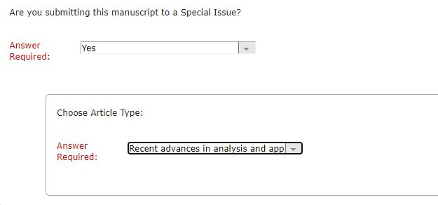

Call for papers
Sample Abstract File: template.pdf template.tex
MINI-SYMPOSIUMS (click here for details)
In the framework of the Seventh International Conference on Analysis and Applied Mathematics (ICAAM 2024), the following mini-symposiums will be organized:
-
MS1: Functional analysis in interdisciplinary applications
-
MS2: Applied Statistics and Data Analysis
-
MS3: Biomedical Signal Processing
AIP PAPERS (EXTENDED ABSTRACTS) --
Submission is OPEN
Each participant must submit a short abstract before submitting AIP Paper.
* The deadline for submission of extended abstracts for publication in the AIP is November 1, 2024.
* The authors who want to publish their extended abstracts (4-6 pages) in AIP Proceeding Series should prepare their articles in LaTeX with single-column 8.5 x 11 templates format given below.
* AIP Publishing has made a formatted template available in Overleaf. We recommend using the AIP Conference Proceedings template in Overleaf for best results and full support. Authors may download either the PDF template or a .zip file containing the template. The template is available for download here.
* AIP Extended abstracts must be submitted online. Please upload the pdf file in your initial submission.
If your paper is accepted, we will request the source file (TeX file, pdf file, figure files (if any) as a zip or rar file).
* In addition to conference registration fee, authors should pay an extra fee ($ 167) per article. Once
the articles are received, reviewed, and accepted, an email is sent to the corresponding author
to request that they complete the electronic version of our copyright form.
ICAAM Conference does not publish papers in the AIP Conference Proceedings without payment of the fees. Please pay the publication fee for your work after you receive the notification about the acceptance of your paper.
Please send an email to icaammail@gmail.com to inform us about your payment.
You can pay using PayPal: https://www.paypal.me/icaam
==========================================================================
FULL PAPERS
* Bulletin of the Karaganda
University-Mathematics IN PRESS: 2024 (115) 3
https://mathematics-vestnik.ksu.kz/
The journal "Bulletin of the Karaganda University-Mathematics" is included in the Emerging Sources Citation Index from Web of Science Core Collection database of Clarivate Analytics.
We invite the conference participants to submit their papers for publication in the regular issue of the journal. The issue is devoted to the publication of high-quality research papers presented in ICAAM-2022. At will, conference participants can submit their papers for publication in subsequent issues.
==========================================================================
* Journal of Mathematical Sciences (SERIES A)
Submission is OPEN - Special Issue: Recent Advances in Analysis and Applied Mathematics
https://link.springer.com/journal/10958
The field of analysis has experienced significant advancements in recent years, driven by both theoretical breakthroughs and the growing demand for sophisticated mathematical tools to address complex real-world problems. This special issue seeks to capture the breadth and depth of these developments, highlighting their impact on diverse areas such as physics, engineering, biology, finance, and computer science.
Scope and Objectives:
This special issue will feature original research articles on a wide range of topics within analysis and applied mathematics, including but not limited to:
- Functional Analysis and Operator Theory
- Differential Equations and Dynamical Systems
- Numerical Analysis and Scientific Computing
- Mathematical Modeling and Applications in Science and Engineering
The objectives of this special issue are to:
- Advance theoretical understanding of fundamental concepts in analysis and applied mathematics.
- Develop innovative methodologies and algorithms for solving complex mathematical problems.
- Foster interdisciplinary collaboration between mathematicians and researchers in other fields.
- Showcase the diverse applications of analysis in addressing real-world challenges
To submit your article:
1- Go to https://www.editorialmanager.com/joth
2- Login with your account (create an account if you don't have one)
3- Click "Submit a Manuscript" to submit your original (never published) article.
4- In the Additional Information section, answer the Special Issue question YES, and select Recent Advances in Analysis and Applied Mathematics

=======================================================================
* e-Journal of Analysis and Applied
Mathematics Open Volume - Articles will be published online immediately after acceptance
e-Journal of Analysis and Applied Mathematics is an international journal dedicated to the latest analysis and applied mathematics advancements. This journal aims to provide a forum for researchers and scientists to communicate their recent developments and present their original results in various fields of analysis and applied mathematics. All articles submitted to the journal must be written in clear and concise English. Only original and unpublished articles are accepted, and authors may not republish their papers in the same or similar form. The decision on the acceptance is taken after a peer-reviewing procedure. The journal makes no page charges.
Submission of an article is via submission@ejaam.org
For details, please click https://ejaam.org/submit